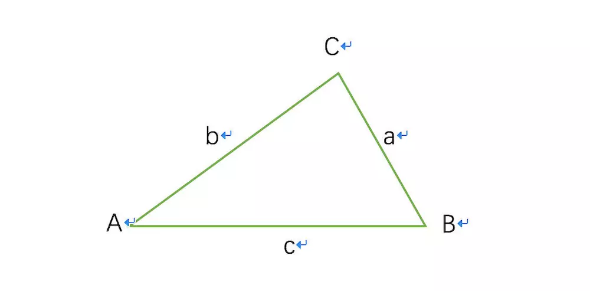

TF-IDF是什么
TF-IDF是一种统计方法，用以评估一个词对于一篇文章或语料库中一篇文章的重要性。字词的重要性随着它在文件中出现的次数成正比增加，但同时会随着它在语料库中出现的频率成反比下降。
TF-IDF的使用场景
TF-IDF加权的各种形式常被搜索引擎应用，作为文件与用户查询之间相关程度的度量或评级。除了TF-IDF以外，因特网上的搜索引擎还会使用基于链接分析的评级方法，以确定文件在搜寻结果中出现的顺序。
TF-IDF原理
- TF（Term Frequency) 表示词频，即一个词在在一篇文章中出现的次数，但在实际应用时会有一个漏洞，就是篇幅长的文章给定词出现的次数会更多一点。因此我们需要对次数进行归一化，通常用给定词的次数除以文章的总词数。
这其中还有一个漏洞，就是 ”的“ ”是“ ”啊“ 等类似的词在文章中出现的此时是非常多的，但是这些大多都是没有意义词，对于判断文章的关键词几乎没有什么用处，我们称这些词为”停用词“，也就是说，在度量相关性的时候不应该考虑这些词的频率。
- IDF（Inverse Document Frequency）逆文本频率指数，如果包含关键词w的文档越少，则说明关键词w具有很好的类别区分能力。某一关键词的IDF，可以用总的文章数量除以包含该关键词的文章的数量，然后对结果取对数得到
注：分母加1是为了避免没有包含关键词的文章时分母是0的情况
一个词预测主题的能力越强，权重就越大，反之，权重越小，因此一个词的TF-IDF就是：
实际应用
通常在新闻的分类，或者说文章的分类的时候我们会用到ID-IDF。如果让编辑来对新闻或者文章分类，他一定要先读懂文章，然后找出主题，最后根据主题的不同对文章进行分类。而让电脑对文章进行分类，就要求我们先把文字的文章变成一组可以计算的数字，然后通过算法来算出文章的相似性。
首先我们先来看怎么用一组数字（或者说一个向量）来表示一篇文章。对于一篇文章的所有实词（除去无意义的停用词），计算出他们的TF-IDF值，把这些值按照对应的实词在词汇表的位置依次排列，就得到了一个向量。比如，词汇表中有64000个词，其编号和词：
| 单词编号 | 汉字词 |
|---|---|
| 1 | 阿 |
| 2 | 啊 |
| … | … |
| 789 | 服装 |
| … | … |
| 64000 | 做作 |
在某一篇文章中，文章中的词的TF-IDF值对应为：
| 单词编号 | TF-IDF |
|---|---|
| 1 | 0 |
| 2 | 0.0034 |
| … | … |
| 789 | 0.034 |
| … | … |
| 64000 | 0.075 |
如果单词表的某个词在文章中没有出现，对应的值为零，这样我们就得到了一个64000维的向量，我们称为这篇文章的特征向量。然后每篇文章就可以用一个向量来表示，这样我们就可以计算文章之间的相似程度了。
向量的夹角是衡量两个向量相近程度的度量。因此，可以通过计算两篇文章的特征向量的夹角来判断两篇文章的主题的接近程度。那么我们就需要用余弦地理了。

∠A的余弦值为：
如果将三角形的两边b和c看成是两个以A为起点的向量，那么上述公式等于：
其中，分母便是两个向量b和c的长度，分子表示两个向量的内积。假设文章X和文章Y对应的向量是
那么他们的夹角的余弦等于
由于向量中的每一个变量都是正数，所以余弦的取值在0到1之间。当两篇文章向量的余弦等于1时，这两个向量夹角为零，两篇文章完全相同；当夹角的余弦接近于1时两篇文章越相似，从而可以归成一类；夹角的余弦越小，夹角越大，两篇文章越不相关。
现在假定我们已知一些文章的特征向量，那么对于任何一个要被分类的文章，就很容易计算出它和各类文章的余弦相似性，并将其归入它该去的那一类中。
如果事先没有已知的文章的特征向量呢，可以用自底向上不断合并的方法。
- 计算所有文章之间凉凉的余弦相似性，把相似性大于一个阈值的合并成一小类
- 把每个小类中的所有文章作为一个整体，计算小类的特征向量，在计算小雷之间两两的余弦相似性，然后合并成一个大类
这样不断做下去，类别越来越少，而每个类越来越大。当某一类太大时，这一类里的文章的相似性就很小了，这时就要停止迭代过程了，然后完成分类。